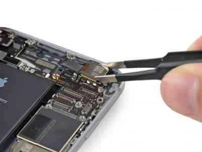
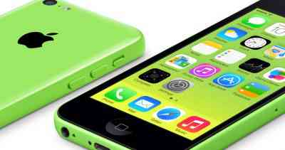

Partes del iPhone6

Hardware
Tiene un frente de cristal curvado rodeando los bordes de la pantalla, la parte trasera es de aluminio.
Los modelos son de color oro, gris espacial y plata. El tamaño del grosor es de 6,9 milímetros lo que es
igual a 0,272 pulgadas. Es mucho más delgado que el iPhone 5s.
La pantalla se califica como Retina Display HD, tiene 4,7 pulgadas y una relación de 16:9, con una
resolución de 1334×750. El botón de encendido se ubica en la parte lateral del teléfono. La cámara
trasera tiene una ligera protuberancia que rodea la lente, esta está fabricada con cristal de zafiro.
Touch ID
Esta característica permite acceder al teléfono de una forma segura utilizando la contraseña de huella
digital. Con esta función se tiene acceso a la pantalla de inicio y a la herramienta de compras de
sitios como iBooks, AppStore y iTunes sin necesidad de utilizar alguna contraseña. Sólo basta con que el
usuario coloque su dedo en el botón de inicio y el aparato estará desbloqueado.
La huella dactilar se puede leer sin importar la orientación en la que sea colocada, esto gracias a la
legibilidad de 360 grados. Los usuarios pueden almacenar y crear de manera local diferentes huellas
digitales.
Cámara
La cámara trasera tiene 8 megapíxeles de una definición alta, tiene un sensor nuevo qué le añade píxeles
mucho más grandes para mejorar el rendimiento cuando hay poca luz, este es llamado Focus Pixel. La
apertura
de la lente es de f/2,2.
Es capaz de grabar videos de 1080p a 30 o 60 cuadros por segundo.
Conectividad

Tiene soporte LTE con capacidad de más de 20 bandas, llega hasta los 150 Mbps de velocidad de descarga o
bajada junto con el soporte de VoLTE. El rendimiento del WiFi es mucho mejor para soportar tecnología
inalámbrica de 802.11ac, gracias a esta característica se pueden alcanzar velocidades de hasta 433 Mbps
añadiéndole también WiFi Calling.
También tiene soporte añadido para las comunicaciones de campo cercano, también conocidas por sus siglas
como NFC.
Ésta se utiliza en la aplicación de Apple Pay, este sistema de pagos móviles permite almacenar tarjetas
de
crédito para luego ser utilizadas en pagos en línea y comprar en diferentes tiendas. Este soporte y
sistema
son limitados y no se pueden usar en ningún otro ámbito.
Software
El software original del iPhone 6 es el iOS 8, sin embargo gracias a las actualizaciones ya es posible
instalarse el iOs 10 en el teléfono inteligente. Gracias a este novedoso software las aplicaciones son
capaces de tener gran ventaja del amplio tamaño de la pantalla, mostrando muchos más datos e información,
mejoras en el rendimiento de la calidad de la velocidad de la memoria RAM y demás aspectos internos.